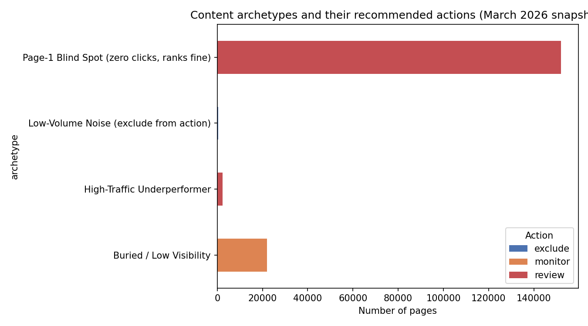

Not every underperforming page needs the same fix. Clustering 331,437 real production content pages by search behavior surfaces recurring archetypes — and one blind spot the old rule-based flags were mostly missing.
Out of thousands of content pages, which ones deserve an editor's attention first — and what kind of attention?
This project uses unsupervised clustering on a March 2026 snapshot of 331,437 pseudonymized content pages from FlyRank's production search and analytics warehouse (real Google Search Console and Analytics data, spanning 47 clients) to discover recurring content performance archetypes, rather than relying on a single hand-written refresh score. K-Means clustering (k=5) on standardized search metrics — validated with a client-grouped holdout split to guard against leakage — found five archetypes and was compared against a transparent rule-based baseline built the week before. The dominant pattern, nicknamed “Page-1 Blind Spot,” covers roughly 85% of visible pages that rank respectably (median position ~7) yet earn essentially zero clicks — a pattern the baseline rule caught in only about a third of cases. The output is a ranked, reason-coded action queue a content strategist can use today, alongside an honest accounting of exactly where these findings do and don't hold.
FlyRank researches, writes, and publishes content directly into client websites, then watches search performance and optimizes — largely automated, run at a scale no team could review page-by-page. Content that ranks well in Google search quietly decays over time: rankings slip, clicks drop, and most teams notice only after the damage compounds. FlyRank's product already flags pages today using hand-written rules — a health score, quick-win tags, needs-attention flags — and they work. But fixed rules run out where signals get numerous and tangled: a page can be high-impression, low-CTR, old, and informational all at once, and no single threshold captures that combination well.
This project asks a narrower, more useful version of that question: rather than a single score, can content be grouped into a small number of recurring behavior patterns — archetypes — that a human content strategist can learn once and then recognize instantly across any client's inventory? The decision this supports is concrete: a strategist reviewing thousands of pages opens an archetype breakdown instead of a flat list, sees which pattern dominates their client's portfolio, and applies a known playbook for that pattern. A wrong call here costs real time — flagging a healthy page wastes editor effort, missing a real underperformer leaves an easy win on the table.
This analysis uses the FlyRank ML Internship warehouse release, hosted on Hugging Face, queried directly rather than downloaded. Two tables were used: fact_content_daily_performance (one row per report date × client × content page) and dim_content (content page metadata).
Time window: March 2026 — a mid-panel month, deliberately not the dataset's final month, which is reserved as a sealed test period for future, unbiased checks. This slice contains 9,841,378 daily rows, aggregated down to 331,437 unique content pages for the month.
Unit of analysis: one row = one content page, with daily metrics summed or averaged across the full month. Features used: monthly impressions, click-through rate, average search position, engagement rate (filtered to genuinely-available rows only), and days since the page was created.
Known coverage limit: only 4.2% of March rows had usable engagement (GA4) data, and 36.7% had usable search (GSC) data — both filtered using their respective availability flags before any feature was built.
Before any modeling, a transparent rule was built: flag a page for review if it gets meaningful traffic (≥200 impressions) and its click-through rate falls below the typical rate for its ranking position. The position-based benchmarks came from a signal audit confirming a real pattern — deeper-ranked pages get meaningfully fewer clicks per impression (n = 17,426–83,288 per tier). This baseline flagged 57,496 of 331,437 pages for review.
K-Means clustering (k=5), chosen because it needs no pre-labeled "correct answer" — no such ground truth exists for "what type of page is this." Four features (impressions, CTR, average position, days since creation) were standardized before clustering, since raw impression counts (up to 617,124) would otherwise dominate a 0–100 CTR percentage in the distance calculations K-Means relies on. Five clusters were chosen over a marginally higher-scoring seven-cluster solution, prioritizing interpretability: the quality gain from 5→7 was small (silhouette 0.44→0.46), and five distinct, nameable groups are easier for a strategist to act on.
Rows were split by client, not by individual page (GroupShuffleSplit). Pages from the same client aren't independent — shared writing style, shared industry — so a random page-by-page split would let the model implicitly "see" a client's style on both sides, inflating its apparent quality. The grouped split confirmed zero client overlap between train and holdout.
| Approach | Output | Pages flagged for review |
|---|---|---|
| Week 4 rule-based baseline | Single review / no-action flag | 57,496 of 331,437 (all pages) |
| Clustering (5 archetypes) | Archetype + recommended action | 154,433 review / 21,956 monitor / 349 exclude (of 176,738 visible pages) |
Note: the baseline's denominator is all 331,437 pages; clustering's is the 176,738 pages with real search visibility (see Limitations).

The baseline rule flagged only about a third of these pages for review; clustering flags nearly all of them, because it reads the combination of position and CTR rather than a single fixed threshold.
Validation: under the honest client-grouped split, clustering scored a silhouette of 0.419 on training clients and 0.496 on 17 completely unseen holdout clients — quality held up, even improved slightly, on new clients.
Honest caveat: 57.4% of pages in the "review" queue have an individually fine reason code and are only included because their archetype behaves this way as a group — disclosed on purpose. Read the queue as a prioritized starting list, not a list of confirmed individual problems.
content_updated_date cannot be trusted — roughly 88.5% of rows carry an implausible, future-dated value.| Priority | Archetype | Share of visible pages | Action | Why |
|---|---|---|---|---|
| 1 | Page-1 Blind Spot | review | Ranks well (median pos. ~7) but ~0% CTR — likely a title/snippet/intent mismatch | |
| 2 | High-Traffic Underperformer | review | High volume, CTR below its position's benchmark — more upside per fix | |
| 3 | Buried / Low Visibility | monitor | Deep position (median ~53) — a visibility problem, not a click problem | |
| — | Low-Volume Noise | exclude | 1–2 total clicks per page — any CTR here is statistical noise |
How to work the queue: start with archetype 1 — largest group, and a plausible common fix exists (rewriting titles/meta descriptions to better match search intent). Within each archetype, prioritize by impression volume: a page at 10,000 impressions and 0% CTR represents far more lost opportunity than one at 50.
What this playbook deliberately does not recommend: refreshing pages simply for being old (tested and found unreliable as a standalone signal), or automating any delete, unpublish, or rewrite decision — every action requires human review.
Repository: github.com/mashfiqmahi/assignment_FLyRank-AI Notebook: w05_model.ipynb (clustering) Notebook: w06_validation_audit.ipynb (honest split + leakage audit) Notebook: w07_action_playbook.ipynb (action playbook)
All random processes use a fixed seed (random_state=42) for the train/holdout split and the K-Means fit, so a fresh run reproduces the same cluster assignments and metrics.
git clone https://github.com/mashfiqmahi/assignment_FLyRank-AI
cd assignment_FLyRank-AI
pip install -r requirements.txt
# open work/notebooks/w05_model.ipynb in Colab or Jupyter, Runtime → Run all